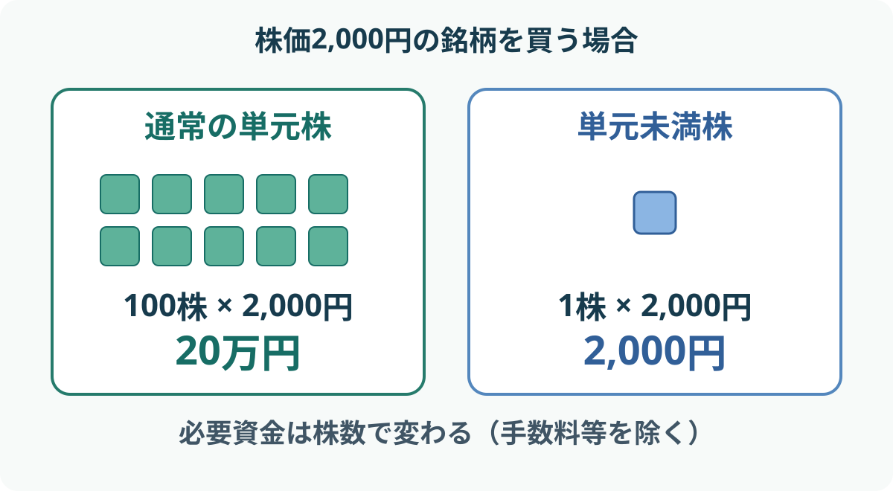

STOCK INVESTING / PRACTICAL GUIDE
単元株とは？100株単位の売買と単元未満株の違い
日本の上場会社の株式は、通常100株を1単元として売買します。そのため、株価が2,000円なら、通常の取引で買うには原則20万円が必要です。一方、証券会社の単元未満株サービスを使えば、1株から買える場合があります。ただし、注文方法や約定価格、議決権、株主優待などには違いがあります。
1. 単元株と100株単位の仕組み
単元株とは、会社が定款で定める一定数の株式を1つのまとまり（1単元）として扱う制度における、1単元以上の株式を指す言葉です。1単元を何株にするかは会社が定めます。
日本の上場内国株では、かつて複数の売買単位が併存していました。全国の証券取引所は売買単位の統一を進め、2014年までに100株と1,000株の2種類に集約。その後、1,000株単位の売買は2018年10月1日に廃止され、100株単位に統一されました。現在、上場内国株は通常100株単位で売買します。なお、統一前には100株・200株など合計8種類の売買単位が存在していました。
たとえば、1単元が100株の会社なら、通常の取引所での注文数量は100株、200株、300株というように100株の整数倍になります。1株や50株だけを取引所の通常の売買単位で直接注文することはできません。
ここでいう100株は、日本の内国上場会社の普通株式についての説明です。ETFやREIT、外国株式などは取引単位が異なる場合があります。また、株式分割や単元株式数の変更などがあれば、銘柄ごとの取引単位を確認する必要があります。
2. 購入に必要な金額を計算する
通常の売買で必要になる株式購入代金は、基本的に「株価×売買株数」で計算します。1単元が100株なら、株価に100を掛けた金額が1単元の購入代金です。実際には、これに売買手数料などが加わる場合があります。
| 株価 | 1株の購入代金 | 100株の購入代金 |
|---|---|---|
| 500円 | 500円 | 50,000円 |
| 1,000円 | 1,000円 | 100,000円 |
| 2,000円 | 2,000円 | 200,000円 |
| 5,000円 | 5,000円 | 500,000円 |
株価2,000円の銘柄を100株買う場合、購入代金は20万円です。株価が同じでも、必要資金は売買単位によって変わります。投資先を比較するときは、株価だけでなく「株価×売買単位」で投資単位を計算しましょう。

3. 単元未満株なら1株から買える
単元未満株（たんげんみまんかぶ）とは、1単元に満たない株式です。1単元が100株の銘柄なら、1〜99株が単元未満株に当たります。証券会社が提供する単元未満株サービスを利用すると、通常の100株単位ではなく、1株から売買できる場合があります。
たとえば株価2,000円の銘柄なら、1株は2,000円、10株は2万円、50株は10万円です。100株を一度に買う資金がなくても、少ない株数から保有を始められます。
ただし、単元未満株サービスは、取引所で100株単位の注文を出す通常取引と同じ仕組みとは限りません。証券会社が取引の相手方となる方式や、注文をまとめて特定の時点の価格で約定させる方式などがあります。利用できる銘柄、注文時間、価格の決まり方は証券会社ごとに異なります。
4. 配当金・議決権・株主優待の違い
単元未満株だからといって、株主としての権利がすべてなくなるわけではありません。JPXの用語説明では、単元未満株式にも議決権を前提とする権利を除き、基本的に1単元以上の株式と同様の権利があるとされています。
| 項目 | 単元未満株（例：1〜99株） | 1単元以上（例：100株） |
|---|---|---|
| 配当金 | 原則として保有株数に応じて受け取れる | 保有株数に応じて受け取れる |
| 株主総会の議決権 | 単元未満では原則なし | 1単元につき原則1個 |
| 株主優待 | 会社ごとの条件による。対象外の場合も多い | 必要株数など会社が定める条件による |
| 通常の取引所売買 | 100株単位の通常注文では売買できない | 100株単位で通常売買できる |
配当金は株数に応じて受け取れる
配当を実施する会社で、権利を得るための条件を満たしていれば、単元未満株でも保有株数に応じた配当金を受け取れます。たとえば1株当たり年間配当が50円なら、20株保有の場合の税引前配当は1,000円です。100株なら5,000円です。実際の受取額は税金や会社の配当決定によって変わります。
配当の権利を得るには、会社が定める基準日に株主名簿へ記載されるなどの条件を満たす必要があります。購入しただけで直ちに配当を受け取れるわけではありません。権利確定日・権利付き最終日などの仕組みは、株式の配当金とは？で確認できます。
議決権は1単元に達してから
単元株制度では、原則として1単元につき1個の議決権が与えられます。1単元が100株の会社なら、50株だけを保有していても株主総会で議決権を行使できません。100株以上を保有すると、単元数に応じて議決権を持ちます。
株主優待は会社ごとに条件が違う
株主優待は法律で一律に決まった権利ではなく、各企業が制度と条件を定めています。100株以上を条件にする会社もあれば、1株から対象になる制度や、保有株数・保有期間によって内容が変わる制度もあります。単元未満株でも優待が必ず受け取れる、または100株なら必ず受け取れるというわけではありません。最新の株主優待制度を企業のIR資料で確認してください。
5. 注文方法・約定価格・費用の違い
単元未満株サービスを比較するときは、売買手数料が無料かどうかだけでなく、注文を出せる時間、約定するタイミング、価格への上乗せ・差し引き（スプレッド）も確認します。
| 確認項目 | 通常の100株取引 | 単元未満株サービス |
|---|---|---|
| 注文数量 | 100株単位の整数倍 | 1株単位など、サービスの設定による |
| 注文方法 | 成行・指値など複数の注文方法 | 成行のみ、または一部サービスで指値も可能 |
| 約定タイミング | 取引所の売買時間中に市場で成立 | 寄付・引けなど所定の時点、またはリアルタイムなど方式による |
| 価格 | 取引所の注文状況と売買成立の仕組みによる | 基準価格にスプレッドを加減する方式などがある |
| 費用 | 証券会社の手数料体系による | 手数料無料でもスプレッド等がかかる場合がある |
証券会社によって取引の仕組みが違う
単元未満株サービスの例として、2026年11月18日に確認した各社の案内では、次のような違いがあります。これはサービスの仕組みを理解するための例であり、すべての銘柄・口座・注文に同じ条件が適用されるという意味ではありません。
| サービス例 | 注文・約定の特徴 | 価格・費用で見る点 |
|---|---|---|
| SBI証券「S株」 | 注文時間帯に応じて、当日前場始値・後場始値・後場引け・翌営業日前場始値などで約定する方式 | 注文時点の市場価格で即時に約定する取引とは異なる。取引コース等の手数料条件も確認 |
| 楽天証券「かぶミニ」 | 寄付取引に加えてリアルタイム取引があり、リアルタイムでは指値注文も可能 | 確認日時点では売買手数料無料。リアルタイム取引には0.22％のスプレッドがあり、寄付取引はスプレッドなし |
たとえば、売買手数料が無料でも、買付価格にスプレッドが上乗せされ、売却価格から差し引かれる方式なら、実質的な売買コストはゼロではありません。また、注文を出した時点と実際に約定する時点が異なるサービスでは、その間の株価変動を受けます。
単元未満株を何回かに分けて買い、合計100株に達した場合でも、最初から100株を通常取引で買った場合と費用・約定価格が同じになるとは限りません。取引回数、約定タイミング、スプレッド、手数料体系を含めて比較しましょう。
6. どちらを使うか決める前の確認点
どちらが常に有利というわけではありません。単元未満株は少額で始めやすい一方、注文方法や約定価格に制約があることがあります。通常取引は注文方法の選択肢が広い一方、100株分の購入資金が必要です。
注文前に確認したい6項目
- 対象銘柄：買いたい会社の株式がサービスの対象か。市場によって買付・売却の可否が異なる場合もあります。
- 最低注文株数：1株からか、別の単位が設定されているか。
- 約定タイミング：注文直後に約定するのか、寄付・引けなど決まった時点なのか。
- 注文価格：成行・指値の可否、基準価格、スプレッド、価格の丸め方。
- 費用：売買手数料だけでなく、スプレッドやその他の費用、口座コースの条件。
- 株主の権利：配当金の受取方法、議決権、株主優待の必要株数、NISA口座での取扱い。
単元未満株を選ぶ場合も、1株の価格が安いからといって、投資対象そのものの値下がりリスクが小さくなるわけではありません。株数を少なくすれば損益の金額は小さくできますが、株価の変動率は同じです。個別企業の業績や事業リスクを確認し、投資額全体の中で無理のない範囲に収めましょう。
まとめ
日本の内国上場株式は、通常100株を1単元として売買します。株価2,000円なら、通常取引で1単元を買う購入代金は20万円です。単元未満株サービスを使えば1株から買える場合があり、必要資金を抑えられます。
単元未満株でも株数に応じた配当金を受け取れる一方、単元未満では原則として議決権がありません。株主優待や注文方法、約定価格、スプレッドもサービスや企業によって異なります。購入前に、必要資金だけでなく取引条件と株主としての権利を確認しましょう。